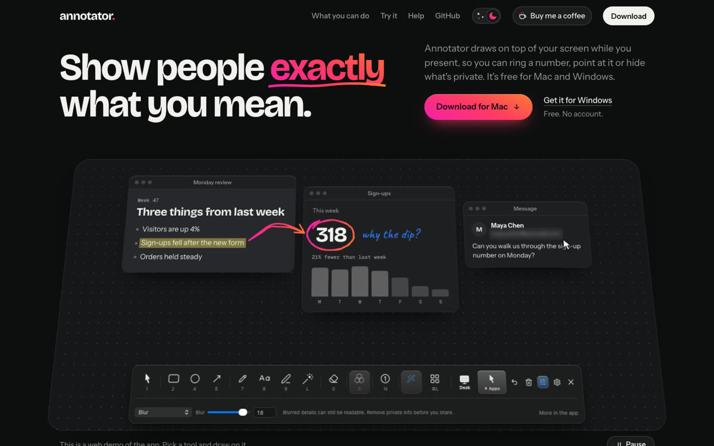

Daylight, the chosen design. It runs from this computer only.

Draw on your screen.
The live demo on the first screen, four things you can do, coffee and install. Dark and light, with the app's gradients.